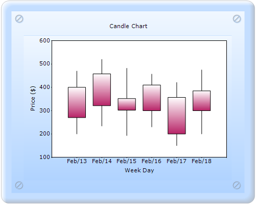

To create a Candle chart through ChartModel:
1. In Controller, create an instance of MVCChartModel.
2. Create an instance of ChartSeries, and set the SeriesType to Candle.
3. Set the ChartSeries, ChartArea, and ChartModel properties.
4. Return view to the corresponding View page after setting the ChartModel to the ViewData.
|
[C#] public ActionResult SimpleChart() { MVCChartModel chartModel = new MVCChartModel(); // Create chart series and add data points to it.
ChartSeries series = new ChartSeries("Candle Chart", ChartSeriesType.Candle);
series.Text = series.Name;
DateTime date1 = new DateTime(2006, 2, 12);
series.Points.Add(date1.AddDays(1), 470, 200, 270, 400);
series.Points.Add(date1.AddDays(2), 520, 234, 321, 458);
series.Points.Add(date1.AddDays(3), 482, 193, 352, 302);
series.Points.Add(date1.AddDays(4), 457, 230, 300, 410);
series.Points.Add(date1.AddDays(5), 421, 150, 357, 200);
series.Points.Add(date1.AddDays(6), 475, 200, 300, 385);
chartModel.Series.Add(series);
chartModel.Skins = ChartModelSkins.Office2007Blue; chartModel.ChartSeriesSkins = ChartSeriesSkins.Analog; chartModel.SmoothingMode = System.Drawing.Drawing2D.SmoothingMode.AntiAlias; chartModel.BorderAppearance.SkinStyle = ChartBorderSkinStyle.Pinned;
chartModel.Text = "Candle Chart"; chartModel.PrimaryXAxis.Title = "Week Day"; chartModel.PrimaryYAxis.Title = "Price ($)";
chartModel.PrimaryXAxis.ValueType = ChartValueType.DateTime; chartModel.PrimaryXAxis.DrawGrid = false; chartModel.PrimaryYAxis.DrawGrid = false; chartModel.Indexed = true; chartModel.PrimaryXAxis.DateTimeFormat = "MMM/dd";
chartModel.PrimaryXAxis.HidePartialLabels = true; chartModel.Size = new System.Drawing.Size(500, 400); ViewData.Model = chartModel;
return View(); }
|
5. In the View page, invoke the ChartBuilder by using the control ID as the first argument, and convert the ViewData to MVCChartModel and set it as the second argument.
|
View[ASPX]
<%= Html.Chart("SimpleChart",(MVCChartModel)ViewData.Model) %>
|
|
View[cshtml]
@(new HtmlString(Html.Chart("SimpleChart",(MVCChartModel)ViewData.Model).ToString()))
|
6. Build and run the code, to get the following output:

Figure 126: Chart displaying Candle Series